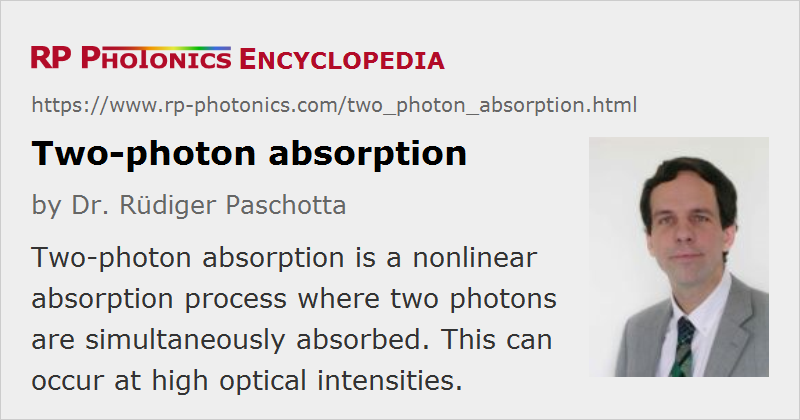

Two-photon Absorption
Acronym: TPA
Definition: a nonlinear absorption process where two photons are simultaneously absorbed
More general term: nonlinear absorption
German: Zweiphotonenabsorption
Category: physical foundations
How to cite the article; suggest additional literature
Author: Dr. Rüdiger Paschotta
Two-photon absorption is a process where two photons are absorbed simultaneously, exciting e.g. an atom or ion to a higher-lying state, with the energy increase being equal to the sum of the photon energies. This is a nonlinear absorption process, occurring with significant rates only at high optical intensities, because the absorption coefficient is proportional to the optical intensity:
The absorbed power is thus proportional to the square of the optical input power.
Two-photon absorption is the simplest variant of multiphoton absorption.
In an insulator or semiconductor, two-photon absorption can normally occur only if the photon energy is at least half the bandgap energy. Therefore, there are e.g. no losses via two-photon absorption when ultrashort pulses at 800 nm wavelength propagate in a silica fiber. On the other hand, two-photon absorption at the same wavelength can occur in semiconductors such as GaAs, having a much smaller bandgap. This is used e.g. in compact autocorrelators for pulse duration measurements: a photodiode which is normally not sensitive at the laser wavelength exhibits a photocurrent only due to TPA.
The phenomenon of two-photon absorption finds applications in various technical areas. For example, it is used in simple autocorrelators for pulse characterization, where TPA in a photodiode, having a bandgap energy larger than the photon energy, is exploited to obtain a nonlinear response. Also, two-photon absorption is often used in fluorescence microscopy (two-photon microscopy) for exciting fluorescence with an infrared laser beam, which can easily penetrate the sample. In other cases, TPA is exploited for optical power limiting or for microfabrication. Under certain circumstances (illumination with ultrashort pulses), it is even possible that the human eye responds to infrared light due to two-photon absorption processes in the retina [7].
Detrimental TPA effects can occur for nonlinear frequency conversion of ultrashort pulses in nonlinear crystal materials, particularly for conversion of short wavelengths, e.g. in UV sources. The transmission of pulsed pump light (or e.g. frequency-doubled light) is then significantly lower than for continuous-wave radiation with the same average power. In some optical materials, the generation of free carriers via TPA can cause photodarkening. TPA can also modify the saturation characteristics of saturable absorbers such as SESAMs, leading to a roll-over of the saturation curve which can help e.g. to suppress Q-switching instabilities.
Questions and Comments from Users
Here you can submit questions and comments. As far as they get accepted by the author, they will appear above this paragraph together with the author’s answer. The author will decide on acceptance based on certain criteria. Essentially, the issue must be of sufficiently broad interest.
Please do not enter personal data here; we would otherwise delete it soon. (See also our privacy declaration.) If you wish to receive personal feedback or consultancy from the author, please contact him e.g. via e-mail.
By submitting the information, you give your consent to the potential publication of your inputs on our website according to our rules. (If you later retract your consent, we will delete those inputs.) As your inputs are first reviewed by the author, they may be published with some delay.
Bibliography
| [1] | W. Kaiser and C. G. B. Garrett, “Two-photon excitation in CaF2:Eu2+”, Phys. Rev. Lett. 7 (6), 229 (1961), doi:10.1103/PhysRevLett.7.229 (first experimental demonstration of two-photon absorption) |
| [2] | E. W. Van Stryland et al., “Energy band-gap dependence of two-photon absorption”, Opt. Lett. 10 (10), 490 (1985), doi:10.1364/OL.10.000490 |
| [3] | M. Sheik-Bahae et al., “Dispersion and band-gap scaling of the electronic Kerr effect in solids associated with two-photon absorption”, Phys. Rev. Lett. 65 (1), 96 (1990), doi:10.1103/PhysRevLett.65.96 |
| [4] | E. R. Thoen et al., “Two-photon absorption in semiconductor saturable absorber mirrors”, Appl. Phys. Lett. 74, 3927 (1999), doi:10.1063/1.124226 |
| [5] | F. R. Ahmad et al., “Energy limits imposed by two-photon absorption for pulse amplification in high-power semiconductor optical amplifiers”, Opt. Lett. 33 (10), 1041 (2008), doi:10.1364/OL.33.001041 |
| [6] | M. Rumi and J. W. Perry, “Two-photon absorption: an overview of measurements and principles”, Advances in Optics and Photonics 2 (4), 451 (2010), doi:10.1364/AOP.2.000451 |
| [7] | P. Artal et al., “Visual acuity in two-photon infrared vision”, Optica 4 (12), 1488 (2017), doi:10.1364/OPTICA.4.001488 |
See also: nonlinear absorption, multiphoton absorption, nonlinearities
and other articles in the category physical foundations
|  |
If you like this page, please share the link with your friends and colleagues, e.g. via social media:
These sharing buttons are implemented in a privacy-friendly way!